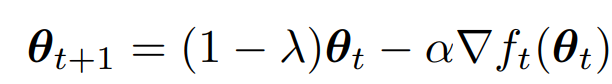
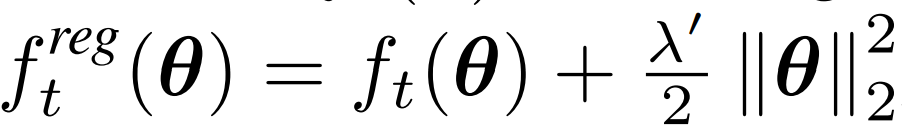
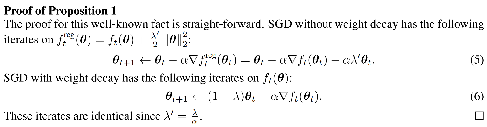
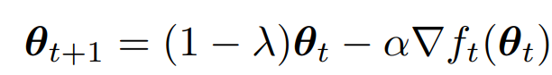
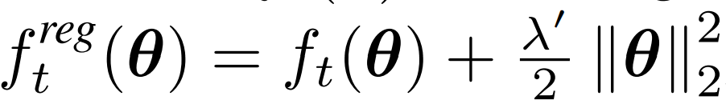
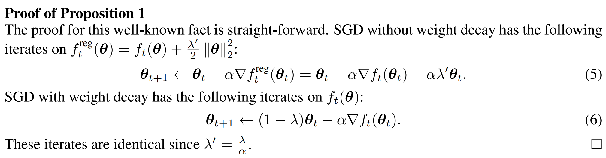

权重衰减和L2正则化
权重衰减是在更新模型的参数时，对当前参数乘以一个系数，公式如下：

而L2正则化是在损失函数后面加一项约束，如下：

在使用SGD作为优化器，且满足$\lambda’=\frac{\lambda}{\alpha}$时，权重衰减和L2正则化等价，证明如下：

参考：
权重衰减是在更新模型的参数时，对当前参数乘以一个系数，公式如下：

而L2正则化是在损失函数后面加一项约束，如下：

在使用SGD作为优化器，且满足$\lambda’=\frac{\lambda}{\alpha}$时，权重衰减和L2正则化等价，证明如下：

参考：